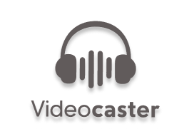
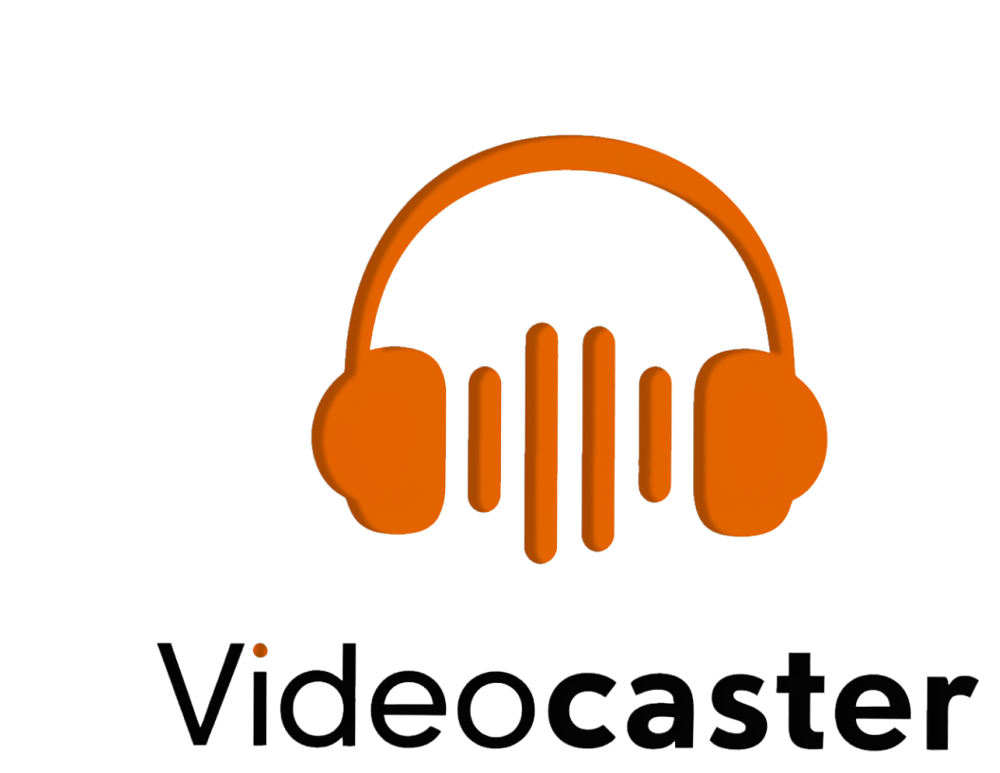

Home
Converter
Sobre


O seu momento pode
se tornar um melhor
momento!
Eternize seu vídeo favorito em um áudio!
Com apenas alguns cliques, você pode compartilhar
essa experiência
Converter
Leia mais